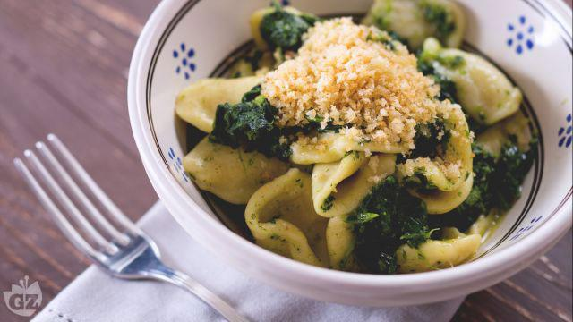
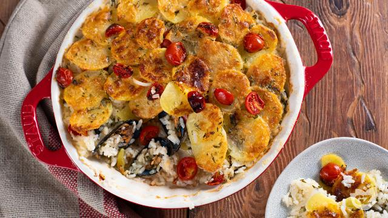
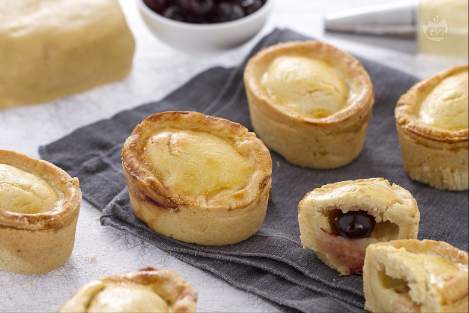

Scopri i sapori autentici della tradizione pugliese attraverso le nostre ricette.
Orecchiette con le cime di rapa

Un piatto semplice ma ricco di personalità, nel quale la sapidità delle acciughe e il carattere delle verdure si fondono con la consistenza della pasta.
Tiella Barese

Piatto che combina sapientemente i sapori del mare con quelli della terra. Durante la cottura, il riso assorbe l'acqua delle cozze e i profumi degli altri ingredienti, mentre le patate formano una superficie dorata e appetitosa.
Pasticciotto Leccese

All'esterno presenta una superficie dorata e leggermente croccante; all'interno racchiude una crema morbida e vellutata. Il contrasto tra la frolla friabile e il ripieno cremoso lo rende un dolce particolarmente apprezzato a colazione e a fine pasto.